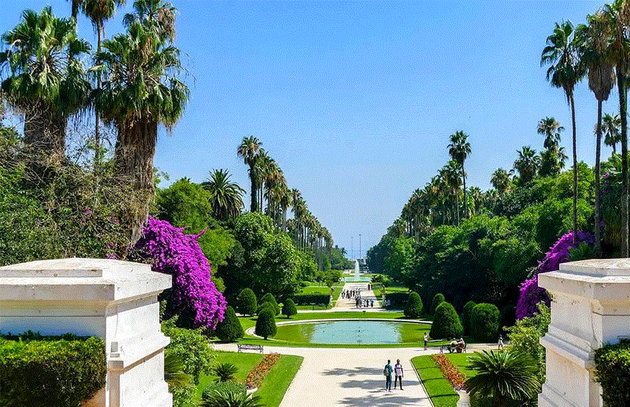

Le jardin d'essai du Hammaa, situé dans le quartier du Belouizdad à Alger, est un jardin luxuriant, qui s'étend en amphithéâtre, au pied du musée national des Beaux-Arts, de la rue Mohamed-Belouizdad à la rue Hassiba-Ben-Bouali, sur une superficie de 32 hectares
Créé en 1832, il est considéré comme l'un des jardins d'essai et d'acclimatation les plus importants au monde4. L'aile ouest du jardin est occupée par le jardin français, bordé de washingtonias. Il est séparé de l'ancien jardin situé plus à l'est par l'allée des platanes, perpendiculaire à la route comme l'allée des dragonniers et l'allée des ficus, coupées elles-mêmes de nombreuses allées parallèles à la route dont les deux principales sont l'allée des bambous et l'allée des palmiers. Une allée circulaire au sud-est, l'allée des cocos, contourne le jardin anglais doté d'un petit lac avec plantes aquatiques. Plusieurs sculptures en pierre d'Émile Gaudissard ornent les allées.
Le jardin d'essai n'est pas seulement un centre de production botanique ou horticole mais aussi un centre d'enseignement et un lieu de promenade fort apprécié des Algérois. On y dénombre plus de 1 200 espèces végétales.